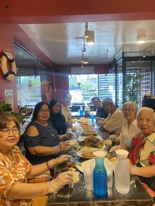

Philippines
27 restaurants · 189 photos
NZ/AU ? Redtail Shrimps & MoreCagayan de Oro · 12NZ/AU ?
Redtail Shrimps & MoreCagayan de Oro · 12NZ/AU ? Highland's Crab RestaurantAntipolo · 12NZ/AU ?
Highland's Crab RestaurantAntipolo · 12NZ/AU ? Fat Crab Seafood BoilSanta Clara, Batangas · 11NZ/AU ?
Fat Crab Seafood BoilSanta Clara, Batangas · 11NZ/AU ? Shrimp Bucket NuvaliPuting Kahoy · 11NZ/AU ?
Shrimp Bucket NuvaliPuting Kahoy · 11NZ/AU ? Crabs N CrackBacoor/Molino, Cavite · 10NZ/AU ?
Crabs N CrackBacoor/Molino, Cavite · 10NZ/AU ? Crab N BitesTagaytay · 10NZ/AU ?
Crab N BitesTagaytay · 10NZ/AU ? The Seafood Bucket (Las Piñas)Las Piñas · 10NZ/AU ?
The Seafood Bucket (Las Piñas)Las Piñas · 10NZ/AU ? I Love Bucket ShrimpsCebu City · 8NZ/AU ?
I Love Bucket ShrimpsCebu City · 8NZ/AU ? Blue Posts Boiling Crabs & ShrimpsDavao · 8NZ/AU ?
Blue Posts Boiling Crabs & ShrimpsDavao · 8NZ/AU ? The Krusty Krab Seafood RestaurantManggahan · 8NZ/AU ?
The Krusty Krab Seafood RestaurantManggahan · 8NZ/AU ? Mad Cajun Seafood BoilAntipolo · 6NZ/AU ?
Mad Cajun Seafood BoilAntipolo · 6NZ/AU ? Shrimp BucketMakati City · 6NZ/AU ?
Shrimp BucketMakati City · 6NZ/AU ? Claw ManilaPasig City · 6NZ/AU ?
Claw ManilaPasig City · 6NZ/AU ? Maretes Cajun SeafoodMandaue City · 6NZ/AU ?
Maretes Cajun SeafoodMandaue City · 6NZ/AU ? Seafood Boil Grill & RestaurantBuagsong · 6NZ/AU ?
Seafood Boil Grill & RestaurantBuagsong · 6NZ/AU ? Crab boil & BBQGabi · 6NZ/AU ?
Crab boil & BBQGabi · 6NZ/AU ? Bag O' ShrimpsPasig City · 6NZ/AU ?
Bag O' ShrimpsPasig City · 6NZ/AU ? Urban Crab Seafood ShackPort Area · 6NZ/AU ?
Urban Crab Seafood ShackPort Area · 6NZ/AU ? Muk-Ja Cajun SeafoodMandaue City · 6NZ/AU ?
Muk-Ja Cajun SeafoodMandaue City · 6NZ/AU ? Sisid Filipino Seafood Boil ShackQuezon City · 6NZ/AU ?
Sisid Filipino Seafood Boil ShackQuezon City · 6NZ/AU ? Seafood Bucket Unlimited ParañaqueSambayanihan People's Village · 5NZ/AU ?
Seafood Bucket Unlimited ParañaqueSambayanihan People's Village · 5NZ/AU ? The Orange BucketMakati City · 4NZ/AU ?
The Orange BucketMakati City · 4NZ/AU ? Pirate's BoilTaytay, Rizal · 3NZ/AU ?
Pirate's BoilTaytay, Rizal · 3NZ/AU ? Seafood Bucket (Mendez)Mendez-Nunez · 3NZ/AU ?
Seafood Bucket (Mendez)Mendez-Nunez · 3NZ/AU ? Seafood Bucket by Nadine's CuisineMarikina, Metro Manila · 2NZ/AU ?
Seafood Bucket by Nadine's CuisineMarikina, Metro Manila · 2NZ/AU ? Gensan Seafood CajunGeneral Santos · 1
Gensan Seafood CajunGeneral Santos · 1
Redtail Shrimps & MoreCagayan de Oro · 12NZ/AU ?Highland's Crab RestaurantAntipolo · 12NZ/AU ?Fat Crab Seafood BoilSanta Clara, Batangas · 11NZ/AU ?Shrimp Bucket NuvaliPuting Kahoy · 11NZ/AU ?
Catch and BucketImus · 11NZ/AU ?Crabs N CrackBacoor/Molino, Cavite · 10NZ/AU ?Crab N BitesTagaytay · 10NZ/AU ?The Seafood Bucket (Las Piñas)Las Piñas · 10NZ/AU ?I Love Bucket ShrimpsCebu City · 8NZ/AU ?Blue Posts Boiling Crabs & ShrimpsDavao · 8NZ/AU ?The Krusty Krab Seafood RestaurantManggahan · 8NZ/AU ?Mad Cajun Seafood BoilAntipolo · 6NZ/AU ?Shrimp BucketMakati City · 6NZ/AU ?Claw ManilaPasig City · 6NZ/AU ?Maretes Cajun SeafoodMandaue City · 6NZ/AU ?Seafood Boil Grill & RestaurantBuagsong · 6NZ/AU ?Crab boil & BBQGabi · 6NZ/AU ?Bag O' ShrimpsPasig City · 6NZ/AU ?Urban Crab Seafood ShackPort Area · 6NZ/AU ?Muk-Ja Cajun SeafoodMandaue City · 6NZ/AU ?Sisid Filipino Seafood Boil ShackQuezon City · 6NZ/AU ?Seafood Bucket Unlimited ParañaqueSambayanihan People's Village · 5NZ/AU ?The Orange BucketMakati City · 4NZ/AU ?Pirate's BoilTaytay, Rizal · 3NZ/AU ?Seafood Bucket (Mendez)Mendez-Nunez · 3NZ/AU ?Seafood Bucket by Nadine's CuisineMarikina, Metro Manila · 2NZ/AU ?Gensan Seafood CajunGeneral Santos · 1Every boil listing found · 72
Google Maps listings whose name says boil / crawfish / Cajun / crab etc. Swept 20 Oct 2026. Not all verified as bag boils; tap to open the listing.
Antipolo · 2
- Mad Cajun Seafood Boil Antipolo · ★4.9 (810)
- The Crab Kitchen Antipolo, Marikina-Infanta Hwy · ★4.7 (59)
Apalit · 1
- Crabs N Crack - Apalit Branch Apalit, XQ45+982 · ★4.9 (67)
Bagong Pagasa · 1
- Shrimp Bucket Trinoma Bagong Pagasa, 10 AM · ★4.8 (258)
Baguio · 1
- Seafood Island Camp John Hay Baguio Baguio · ★3.9 (355)
Balanga · 1
- Crabs N Crack - Balanga Balanga, Barangay Tuyo, Bataan Provincial Hwy · ★4.6 (188)
Balibago · 1
- Crabs N Crack - Infinity Balibago, The Shoppes at Infinity, Aniceto Gueco St · ★4.5 (443)
Baliuag · 1
- Crabs N Crack - Baliwag City Baliuag, Ground Floor, A Square Mall · ★4.8 (89)
Buagsong · 2
- Seafood Boil Grill & Restaurant Buagsong, 8XHG+9F8, F. Martir Street · ★4.1 (208)
- Seafood Boil Grill & Restaurant - Mandaue Buagsong · ★4.3 (41)
Bulaon · 2
- The Orange Bucket, Cajun-Fusion Restaurant Bulaon, Opens 11 AM · ★4.3 (370)
- Crabs N Crack Bulaon, · ★4.4 (103)
Cabanatuan City · 1
- Crab N Bites Cabanatuan City, FWCX+49M General Tinio, Street General Tinio Street Extension · ★4.8 (2204)
Calibutbut · 1
- Crab N Bites Angeles Calibutbut, Fil-Am Friendship Hwy · ★4.6 (161)
Cebu City · 1
- I Love Bucket Shrimps - Capitol Cebu City, 11 A. Climaco St · ★4.4 (714)
Dasmarinas · 2
- Crabs N Crack - Molino Town Center Branch Dasmarinas, GF, Molino Town Center, Molino - Paliparan Rd · ★4.8 (711)
- Crabs N Crack - Open Canal Dasmarinas, Open Canal Rd · ★4.8 (202)
Davao · 4
- Blue Posts Boiling Crabs & Shrimps - Buhangin Davao · ★4.3 (18)
- Blue Posts Boiling Crabs & Shrimps – Bajada Davao · ★4.3 (536)
- Blue Posts Boiling Crabs & Shrimps – SM City Davao Annex Davao · ★3.4 (53)
- Crabs & Co. Seafood Buffet Davao, Juna Subdivision, 425 Tulip Dr · ★4.3 (237)
Gabi · 2
- Cebu Crab Seafoods Restaurant JPARK Gabi · ★4.6 (236)
- Crab boil & BBQ - MARIBAGO BRANCH Gabi · ★4.5 (139)
General Santos · 1
- Shefoods by Mr Krabs General Santos, Springville Foodhub, before Family Country hotel, Mateo Rd · ★5.0 (3)
General Trias · 1
- Crab N Bites Cavite Seafoods na PINAPALA General Trias, Maple Grove by Megaworld · ★4.9 (249)
Klinan · 1
- Chingkay's Crabalicious General Santos City Klinan, 543W+JRH, General Santos City Circumferential Rd · ★4.5 (31)
La Trinidad · 1
- Seafood Bucket Express La Trinidad · ★4.8 (12)
Las Pinas · 1
- Flipper's Seafood Boil PH Las Pinas, PHASE II, BRGY, CASIMIRO VILLAGE, 145 Santol
Luksuhin · 3
- Crab N Bites Tagaytay Luksuhin, dayap itaas, Tagaytay - Nasugbu Hwy · ★4.7 (2961)
- Highland's Crab Restaurant Luksuhin, Tagaytay-Nasugbu Road · ★4.5 (287)
- Crab N Bites Tagaytay 2nd branc Luksuhin, 3VMG+6JX, Tagaytay Laurel Rd · ★4.8 (813)
Magliman · 1
- Crab N' Go - San Fernando (Seafood Restaurant) Magliman, Freon Fix commercial space 80 Mc Athur Highway, Brgy San Agustin, City · ★2.7 (22)
Magsaysay · 1
- Crabs N Crack Seafood House – Southwoods Magsaysay, 82MX+48H, San Francisco · ★4.7 (596)
Makati City · 8
- Burnt Edges by Shrimp Bucket Glorietta Makati City, K-Park, Roof Deck of Glorietta, 1 Ayala Ave · ★4.8 (317)
- Shrimp Bucket BGC Makati City, The Grand Hamptons Tower 1, G/F The Grand Hamptons Tower 1 2nd Avenue, corner 31st Street · ★4.5 (701)
- Shrimp Bucket Newport World Resorts Makati City, Opens 11 AM · ★4.8 (143)
- The Orange Bucket Makati City, Opens 11 AM · ★4.1 (271)
- The Orange Bucket BGC Makati City, Ground Floor of, Avida Towers Turf, Tower 1, 9th Ave · ★4.4 (154)
- The Orange Bucket-Newport City Makati City, A1-A6, Palm Tree Villa 2, Newport City · ★4.0 (773)
- Shrimp Bucket Ayala Malls Manila Bay Makati City, Diosdada Macapagal Blvd, corner Asean Ave · ★4.8 (465)
- Crabs N Crack Parqal Makati City, Second Floor, Parqal Mall · ★4.3 (326)
Mandaluyong City · 1
- Shrimp Bucket Ayala Malls Circuit Makati Mandaluyong City, Opens 11 AM · ★4.5 (195)
Mandaue City · 4
- Cajun Seafood Bantayan Island's Original Mandaue City · ★4.0 (2)
- Maretes Cajun Seafood Mandaue City, 19 Pres. Quirino St · ★4.1 (240)
- Muk-Ja Cajun Seafood Mandaue City · ★3.9 (71)
- Crab boil N BBQ - cebu Mandaue City, Opens 12 pm · ★5.0 (1)
Manggahan · 1
- The Krusty Krab Seafood Restaurant Manggahan, Prinza St · ★3.6 (49)
Pasig City · 4
- Bag O' Shrimps SM Megamall Pasig City, 3rd floor Atrium building, SM Megamall · ★4.1 (93)
- Claw Manila Pasig City · ★4.8 (375)
- Shrimp Bucket Ayala Malls 30th Pasig City, 2/F, Ayala Malls The 30th, 30 Meralco Ave · ★4.7 (224)
- Shrimp Bucket Rockwell Sheridan Pasig City, Opens 11 AM · ★4.7 (64)
Pateros · 1
- The Crab Tub PH Pateros, Ridgewood Towers Taguig
Port Area · 1
- Urban Crab Seafood Shack Port Area, 1616, Tetra Global Bldg, Vasquez St · ★4.1 (85)
Pulong Gubat · 1
- Crabs N Crack – Guiguinto Pulong Gubat, Plaridel Bypass Rd · ★4.8 (571)
Pulong Santa Cruz · 1
- Crabs N Crack - Eton City Square Pulong Santa Cruz, Eton City Square · ★4.8 (829)
Quezon City · 1
- Sisid Filipino Seafood Boil Shack Quezon City, Unit G1, SMRC Building, 155 B. Gonzales · ★4.6 (44) · temporarily closed
Sambayanihan People's Village · 2
- Seafood Bucket Unlimited Parañaque Sambayanihan People's Village · ★4.5 (30)
- Bag O' Shrimps BF Homes Sambayanihan People's Village, 220 Aguirre Ave · ★4.4 (51)
San Fernando · 1
- Crabs N Crack - Jumbo Jenra San Fernando, Jumbo Jenra, Jose Abad Santos Ave · ★4.6 (259)
San Pedro · 1
- Crabs N Crack - Festival Mall San Pedro, New Wing, Upper Ground, Connector Mall · ★4.7 (160)
Santa Clara · 1
- Fat Crab Seafood Boil Santa Clara, D. Silang Ext Rd., Calero Street Barangay · ★4.5 (85)
Santa Maria · 1
- Crabs N Crack – Sta. Maria Santa Maria, New Bypass Road · ★4.4 (247)
Santa Rosa · 1
- Crab N' Go -Sta Rosa Laguna Branch Santa Rosa, mc arthur highway · ★3.9 (37)
Santol · 3
- Crabs N Crack - Timog Friendship Santol, 4HW5+5R5, Fil-Am Friendship Hwy · ★4.7 (633)
- Crabs N Crack - Korean Town, Friendship Highway Santol, Rexsun Building, Fil-Am Friendship Hwy · ★4.6 (418)
- Crabs N Crack - Clark Santol, 5GJG+HX6 · ★4.4 (282)
Taguig · 1
- Laurine’s Seafood boil Taguig, G38M+27M · ★5.0 (1)
Tanza · 1
- Crabs N Crack – Tejero Gentri Tanza, Antero Soriano Hwy · ★4.8 (622)
Tarlac City · 2
- Crab N Bites Tarlac Tarlac City, FHJW+G22, R-9 · ★4.9 (1239)
- Crabs N Crack - Tarlac City Tarlac City, FH9X+XQR, MacArthur Hwy · ★4.6 (227)
Taytay · 1
- Pirate's Boil Restaurant Taytay, Shell Gas Station, R5 Manila E Rd · ★4.4 (47)
Telabastagan · 1
- Crabs N Crack - Orchard Telabastagan Telabastagan, 4J84+JW2 Orchard, MacArthur Hwy · ★4.7 (281)